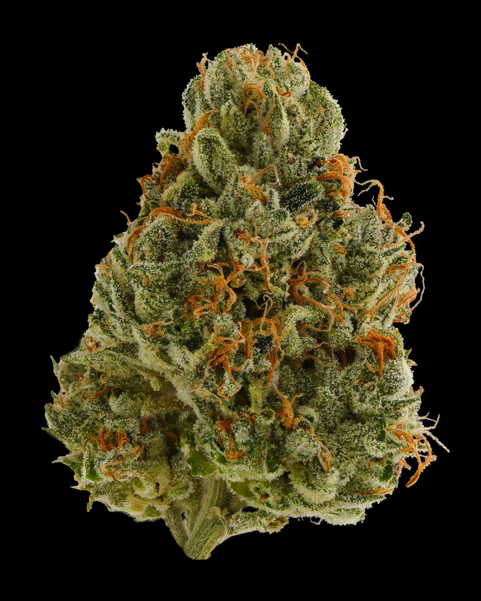

Each color is an aroma family
It is not usually one terpene. Each hue gathers multiple molecules that the nose reads as a related sensory direction.
Stop choosing by THC alone. Flower Spectrum translates a lab-tested terpene panel into one unmistakable aroma fingerprint—so shoppers know what they’re reaching for, retailers can build a balanced shelf, and growers can make the craft inside every jar visible.
38 tracked terpenes 10 aroma profiles 1 repeatable system
The ring is divided into ten fixed aroma families. Each colored segment grows outward as that family’s share of the measured aroma signal increases. Together, those ten radial bands form a batch-specific fingerprint that stays circular, readable, and easy to compare.
It is not usually one terpene. Each hue gathers multiple molecules that the nose reads as a related sensory direction.
Measured COA values are adjusted by explicit potency weights, so a quiet compound cannot overpower a more aromatic one simply because there is more of it.
The same analyte values run through the same 38-terpene engine and deterministic scoring rules every time.
Every color means the same thing on the wheel, the shelf strip, the menu, and the label.
Select one of the ten profiles to view an illustrative fingerprint and the terpene families that usually create that spike.
See where the menu is crowded and where it is quiet. Stock something distinct for every profile instead of another row of products competing on THC alone.
Map a COA →Let the flower’s chemistry join the story of the cultivar, the room, the cure, and the care behind it. A fingerprint gives buyers something meaningful to compare.
Create a fingerprint →Upload a PDF COA, paste its terpene table, or import a Flower Spectrum CSV. Flower Spectrum reads text-layer PDFs and scans image-only pages with private in-browser OCR, then lets you verify every mapped value against the source.

The original document stays visible while Flower Spectrum reconstructs its terpene table. Review the extracted values against the PDF before adding the result.
Mapping is explicit, not fuzzy: an analyte the engine doesn’t recognize is listed in an Unmapped panel with a reason, so nothing disappears quietly. Parsed values are editable before you commit — you are the final check on column choice.
Runs the parser against a battery of real-world COA layout shapes (aligned LOD/LOQ/Result tables, mg/g columns, multi-word and comma-bearing analyte names, isomer peaks, ND/<LOQ, cannabinoid filtering). Values in these fixtures are synthetic format tests, not COA data — they verify the parser structure, so a real paste from your lab is low-risk.